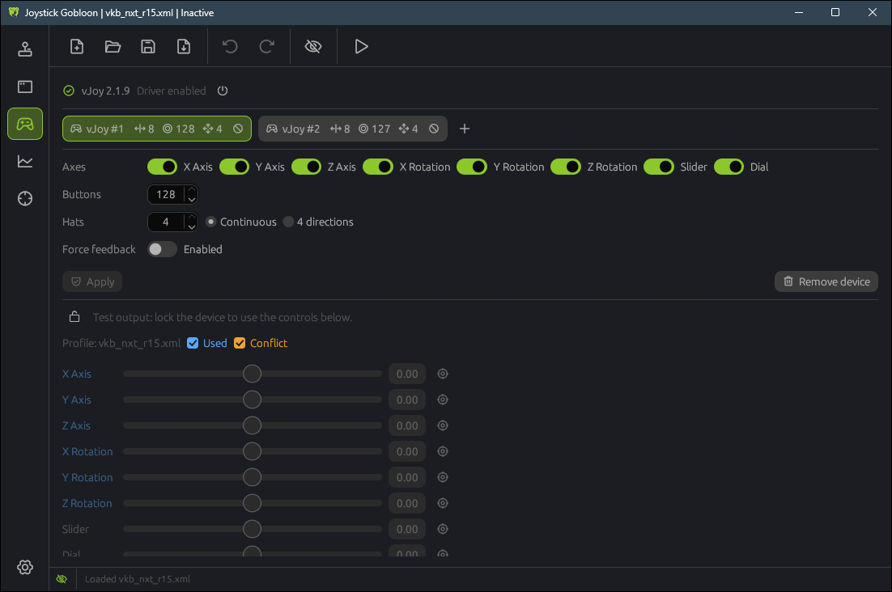

How Joystick Gobloon stands between your controllers and a game: create virtual joysticks, hide the physical ones, choose which programs still see them, and set up a two stick game from start to finish.
The idea
How it works
A game reads joysticks through the system. Joystick Gobloon reads your real sticks first, runs your profile on every change, and writes the result to virtual joysticks. The game is set up to use only those virtual joysticks.
The real sticks are then hidden from the game. Otherwise it would see every input twice: once from the stick itself and once from the virtual joystick.
Green pulses are inputs that reach the game through Joystick Gobloon. Red ones are the direct path from a real stick, which device hiding stops.
A two stick game
Take a game flown with a stick in each hand. It has two kinds of controls: a Combat mode and a Travel mode, where the same buttons do different jobs. You want:
Each real stick to appear in the game as its own virtual joystick: the left one as vJoy #1, the right one as vJoy #2.
A short press on one button to cycle the game's mode, and a long press to jump straight between Combat and Travel (a Tempo action).
A thumb button held as M1 to give the other buttons a second layer of jobs (modifiers).
A softer response curve on the pitch and yaw axes for fine aiming (Response curve).
The game to see only the two virtual joysticks, never the real sticks.
The rest of this page sets that up. The last section walks through it in order.
Virtual joysticks
On Windows (vJoy)
On Windows the virtual joysticks come from the vJoy driver. The Joystick Gobloon installer adds the signed vJoy 2.1.9.1 driver if it is missing. You never need the separate Configure vJoy tool: devices are made right in the app.
Open the Virtual joysticks page in the left rail (the gamepad icon).
Press + next to the device tabs to add a device. A new device starts as a copy of the first one.
Switch on the axes the game should see, set the number of Buttons (up to 128) and Hats (up to 4, either Continuous or 4 directions).
Press Create, or Apply for an existing device. Windows asks for administrator rights once per change.
Repeat for the second stick. vJoy supports up to 16 devices.
Devices cannot be changed while a profile runs: stop it first. Now and then Windows needs a restart before a changed device shows up; the app says so when it happens.

On Linux
Linux needs no driver: the virtual joysticks are made by the kernel's uinput module. They use the same Virtual joysticks page and the same profiles.
On the Devices page, click Grant access once. It installs a rule that lets your user read controllers and create virtual devices, and asks for your password.
Add and set up devices on the Virtual joysticks page as on Windows, with up to 8 axes, 95 buttons and 4 hats each. No administrator prompt is needed.
The devices appear when you activate a profile and disappear when you stop it. Games see them as Joystick Gobloon Joystick 1, Joystick Gobloon Joystick 2 and so on.
The Linux kernel reports at most 80 buttons per physical device. A stick with more buttons can be split into several virtual HID devices in its vendor's tool.
Test the output
Below the device settings is a tester. Lock the device to take control of it, then move its axes, buttons and hats by hand. Open the game's control settings next to it: when you move an axis here, the game should react to it. The input viewer shows the same device live while a profile runs.
Hiding devices
On Windows (HidHide)
On Windows the HidHide driver hides devices for every program, even when Joystick Gobloon is closed. The installer adds the signed driver if it is missing.
Click the eye button in the top toolbar to open the Device hiding window.
Click the eye of each real stick. A closed red eye means hidden; an open green eye means every program sees it.
Unplug the stick and plug it back in. Windows applies the change on reconnect.
Keep Enable device hiding on. The same switch sits in the status bar at the bottom of the window and on the tray icon, for the moments you want every program to see everything again.
Leave the virtual joysticks visible: they are what the game should read.
Programs that see hidden devices
A hidden stick is not gone: a short list of programs still sees it. Joystick Gobloon puts itself on that list at start, so your profile keeps reading the sticks. You can turn that off in Settings with See hidden devices, but then the profile cannot read hidden sticks.
Open the Applications page in the left rail.
Press Add application and pick the program, for example the stick vendor's configuration tool or a calibration utility.
Each row shows whether that program Sees hidden devices or Does not see hidden devices; switch it per program.
Inverse application cloak turns the list around: then only the listed programs are blind to hidden devices and every other program sees them. Use it when only one or two games should be kept from the real sticks.
The game itself should not be on the list in normal mode. If it is, it sees the real sticks again and inputs come in twice.
On Linux
Linux has no HidHide. Instead Joystick Gobloon reads a hidden stick exclusively: while the app runs, no other program gets input from it, games included. Hide sticks with the same eye buttons.
Hiding lasts only while Joystick Gobloon runs. Close the app and every program sees the sticks again.
There is no list of programs that still see hidden devices.
Programs that read raw HID (hidraw), such as Steam or Wine and Proton, are not covered when your user may open the stick's hidraw node; such a stick gets a warning sign on its tab and in the device hiding window. Turn off hidraw (or Steam Input) for that stick in those programs, or games see it twice.
Putting it together
Step by step
The two stick game from the start of this page, from nothing to playing:
Create two virtual joysticks on the Virtual joysticks page: vJoy #1 for the left stick and vJoy #2 for the right one, each with the axes and as many buttons as the stick has.
Build or import the profile. Import a Joystick Gremlin profile from the toolbar, or start a new one. If it was made on another PC, use Map controls on the Devices page to match it to your sticks. A profile also remembers the virtual devices it uses: when one is missing here, a banner on the Devices page offers to set it up.
Map every input. Select an input on the Devices page and add Map to vJoy: left stick inputs to vJoy #1, right stick inputs to vJoy #2.
Add the extras. A Tempo action on the mode button: a short press sends one vJoy button that the game uses to cycle modes, a long press sends another that jumps between Combat and Travel. Make a thumb button the M1 modifier and give the buttons you want doubled an M1 layer. Put a response curve before Map to vJoy on pitch and yaw.
Hide the real sticks in the Device hiding window and reconnect them.
Activate the profile with the play button. The virtual joysticks now follow your sticks.
Bind the controls in the game by moving your real sticks: the game only sees vJoy #1 and vJoy #2, so every binding lands on a virtual joystick. Save the profile.
From then on: start Joystick Gobloon, press play, start the game. In Settings, Joystick Gobloon can start with Windows and activate the profile on its own.
When something is off
The game sees every input twice
A real stick is still visible to it. Hide the stick, reconnect it, and make sure the game is not on the Applications list.
The game sees nothing at all
Check that the profile is active (the play button) and that the input uses Map to vJoy. The tester on the Virtual joysticks page shows whether the device itself reaches the game.
Joystick Gobloon does not see a hidden stick
Keep See hidden devices on in Settings, so the app stays on the list of programs that see hidden devices.
A changed vJoy device does not show up
Stop the profile before changing devices. If the app asks for it, restart Windows.
The game bound the wrong device
Games remember devices by order or by name. Clear its bindings, keep the real sticks hidden, and bind again by moving the sticks while the profile runs.